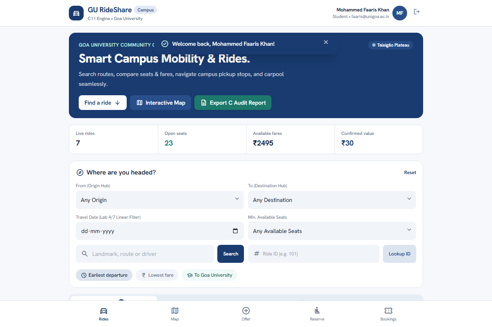
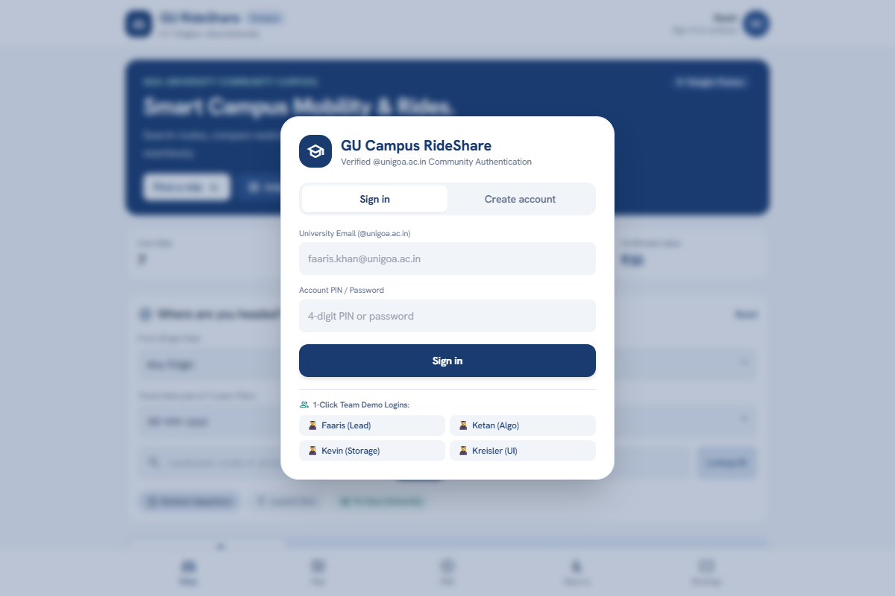
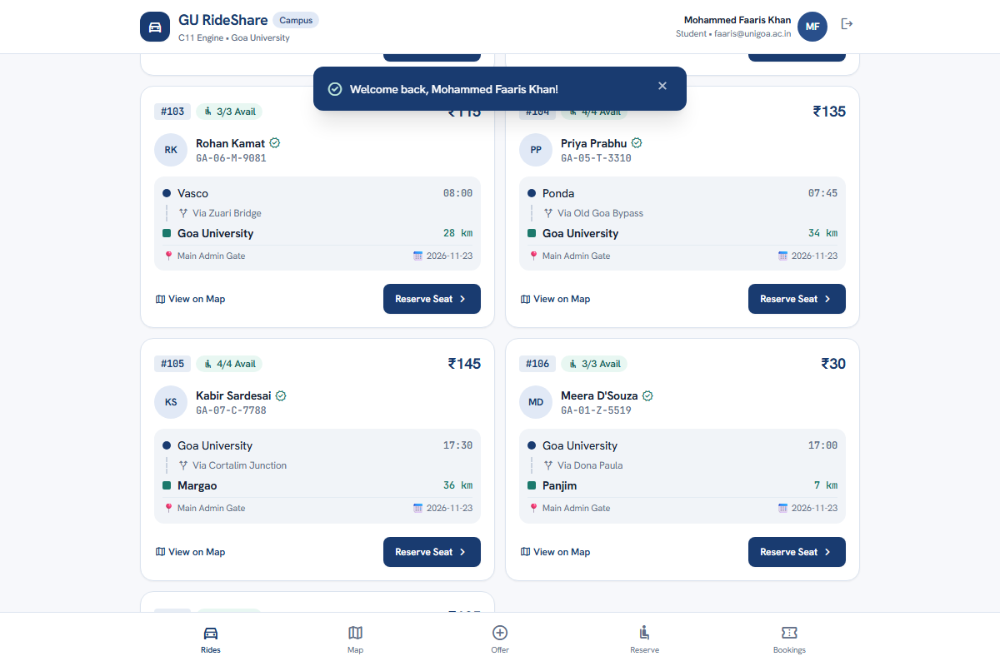
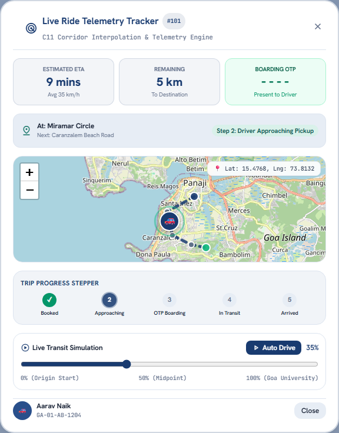
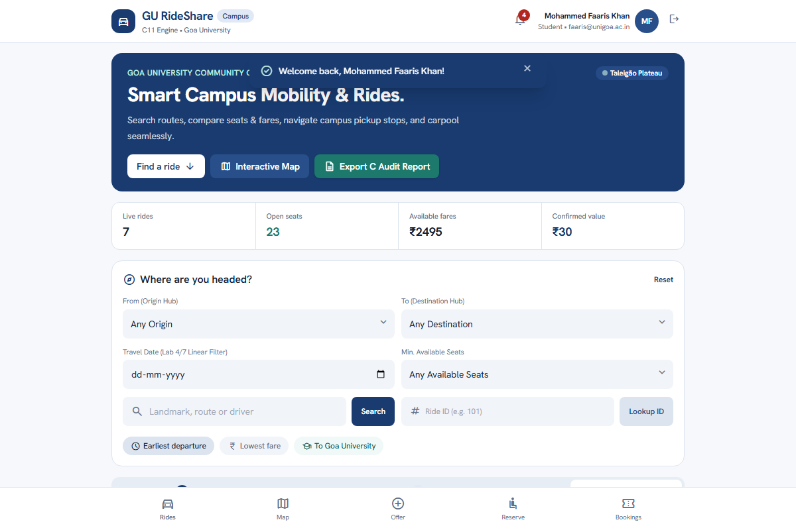

-std=c11 -O2) + Flat-File DBmalloc/realloc dynamic heap, 2D matrix, recursive search & analytics| Roll No. | Student Name | Assigned Modules | Key Responsibilities & Algorithmic Deliverables |
|---|---|---|---|
| 2664 | Mohammed Faaris Khan (Project Lead) |
include/rideshare.hsrc/algorithms.c |
System architecture design; multi-criteria Linear Search (linear_search_by_route); Recursive Binary Search (binary_search_ride_recursive); Selection Sort by departure time; Bubble Sort by fare. |
| 2623 | Ketan Naik | src/storage.c |
Dynamic heap memory management (malloc, realloc doubling, free); pipe-delimited flat-file DB serialization (rides.txt, bookings.txt, users.txt); input delimiter sanitization. |
| 2624 | Kevin Fernandes | src/algorithms.c |
Input parameter validation & branching; 5×5 Goa distance and fare matrices (GOA_DISTANCE_MATRIX, GOA_FARE_MATRIX); greedy 1-stop hub connection recommender; recursive analytics functions. |
| 2625 | Kreisler Mozart | src/main.cweb/server.pyweb/index.html |
Dual-mode C CLI & 15-option interactive terminal controller; thread-safe Python HTTP IPC bridge; Leaflet GIS mapping; digital transit pass modal with dynamic QR Code & Boarding OTP; QA testing. |
Goa University sits atop the isolated Taleigão Plateau, creating significant daily transit friction for thousands of students, faculty, and administrative personnel commuting from major Goan municipal hubs: Panjim, Margao, Vasco, and Ponda. Public bus connectivity is characterized by rigid schedules and crowded transfers at Kadamba Bus Terminals (KTC), while commercial taxi aggregators charge steep, unpredictable surge fares that are economically unsustainable for daily university scholars. Concurrently, hundreds of students and faculty members commute daily in single-occupant vehicles along these exact arterial corridors.
Existing commercial solutions fail in a university setting because they lack institutional identity verification, fail to compute transparent community-approved student fares, provide no transactional guarantees for seat reservation, and offer zero verifiable gate check-in mechanisms. Campus RideShare & Carpool Matcher solves this challenge by engineering a campus-restricted carpool matching platform centered on a provably verified, high-performance pure C11 algorithmic core.
@unigoa.ac.in credentials for Student, Faculty, and Staff accounts.realloc and leak-free memory cleanup.campus_summary.txt) computing recursive seat totals, fare pool, and revenue analytics.
The system decouples client presentation from algorithmic computation through a clean three-tier architecture.
The web interface issues asynchronous JSON requests to a lightweight Python micro-bridge (web/server.py).
The bridge serializes execution through a mutual exclusion lock (threading.Lock()), executes the compiled native C11 binary
(build/rideshare.exe) with specific CLI flags, and converts pipe-delimited standard output into JSON.
fetch) ↑web/server.py)build/rideshare.exe) & Storage Layermain.c, storage.c, algorithms.c), Dynamic Heap Arrays, Flat-File DB (data/*.txt)argv)
init_database): Allocate Heap Capacity for Rides, Bookings, Users
load_rides_from_file() • load_bookings_from_file() • load_users_from_file()
@unigoa.ac.in, Match Password PIN
save_rides_to_file, save_bookings_to_file, save_users_to_file)
free_database) • Exit 0
The project enforces strict separation of concerns with zero duplicate files across the root directory:
| Directory / Path | Component Files | Architectural Scope & Responsibility |
|---|---|---|
include/ |
rideshare.h |
Core C header declarations: structs (Ride, Booking, User, RideShareDB), hub enums, distance/fare matrices, function prototypes. |
src/ |
main.cstorage.calgorithms.c |
Pure C11 implementation: CLI dispatcher, interactive console menu, self-test suite, heap memory, file serialization, routing, sorting, and search. |
web/ |
server.pyindex.htmlapp.jsstyles.css |
Web tier: Python subprocess bridge, responsive dashboard, Leaflet GIS map, digital pass modal with QR generator, and UPI payment modal. |
data/ |
rides.txtbookings.txtusers.txtcampus_summary.txt |
Persistent pipe-delimited flat-file database and generated C audit report; acts as the primary data store. |
build/ |
rideshare.exe |
Compiled native 64-bit C11 binary generated by GCC. |
scripts/ |
build.batstart-mobile.bat |
Automated batch scripts for compilation, automated verification testing, and local area network binding. |
docs/ |
README.md*.pdf |
Technical documentation, architecture references, and formal SEA submission reports. |
Every required curriculum topic from the CSA5003 syllabus—spanning Lab 1 through Lab 8 and Lab #G—is directly implemented
in native C11 code across src/ and include/ as summarized below:
| Lab Module | Syllabus Curriculum Concept | Exact Implementation Function & Code Location |
|---|---|---|
| Lab 1–2 | Constants, Operators & Formatted Console I/O |
#define LOCATION_COUNT 5, MAX_NAME_LEN (rideshare.h:21-32).Integer division/modulo ( depTime / 100, depTime % 100) for 24-hr time parsing.Tabular formatted console output using precision specifiers ( main.c:15-68).
|
| Lab 3 | Decision Making, Branching & Menus |
validate_ride_parameters() (algorithms.c:12-32): Enforces bounds (0–4), origin ≠ dest, valid HHMM (0000–2359), and 1–7 seats.validate_booking_parameters() (algorithms.c:35-47).15-option interactive console menu using switch-case (main.c:493-680).
|
| Lab 4 | 1D Arrays & Search Algorithms |
GOA_LOCATIONS[5] string array lookup (algorithms.c:50-59).Multi-criteria linear_search_by_route() (algorithms.c:180-230) filtering routes, dates, and minimum available seats.Array-shift record deletion delete_ride_transaction() (algorithms.c:482-494).
|
| Lab 5 | 2D Arrays & Selection Sort |
Static 2D integer matrices: GOA_DISTANCE_MATRIX[5][5] and GOA_FARE_MATRIX[5][5] (algorithms.c:62-85).selection_sort_by_time() (algorithms.c:118-137): Iterative minimum-element selection for chronological departure ordering.find_best_stopover_hub() (algorithms.c:98-115): Evaluates intermediate hubs.
|
| Lab 6 | Sorting Algorithms & Optimization |
bubble_sort_by_fare() (algorithms.c:140-160): Orders rides by ascending per-seat fare, utilizing a boolean swapped flag for early termination on already-sorted datasets.
|
| Lab 7 | Recursion & String Handling |
binary_search_ride_recursive() (algorithms.c:163-177): Divide-and-conquer logarithmic search by Ride ID.Recursive fleet analytics: recursive_sum_available_seats(), recursive_sum_fare_pool(), and recursive_sum_booked_revenue() (algorithms.c:233-265).String handling: validate_campus_email() with strstr(), sanitize_pipe_chars(), build_route_description() (algorithms.c:270-320).
|
| Lab 8 | Structures & Dynamic Memory Allocation |
User-defined composite structs: User, Ride, Booking, RideShareDB (rideshare.h:44-90).Heap memory management: init_database() allocates initial capacity via malloc(); capacity doubling via realloc() in ensure_ride_capacity(), ensure_booking_capacity(), ensure_user_capacity() (storage.c:28-135); free_database() prevents memory leaks.
|
| Lab #G | File Handling, Flat-File CRUD & Persistence |
Pipe-delimited persistence: load_rides_from_file(), save_rides_to_file(), load_bookings_from_file(), save_bookings_to_file(), load_users_from_file(), save_users_to_file() (storage.c:140-340).Atomic in-place editing: edit_ride_transaction() (algorithms.c:448-479).Formal C Audit Report generation: export_campus_summary_report() (storage.c:430-512).
|
struct User & Domain Validation)
Unlike generic carpool systems, GU RideShare enforces strict institutional identity verification.
The C11 backend defines a dedicated struct User containing user ID, full name, university email, campus role
(Student, Faculty, Staff), mobile number, and password PIN.
The function validate_campus_email() verifies that the submitted address strictly ends with the
official domain @unigoa.ac.in using pointer arithmetic and strstr().
The backend provides CLI commands --register, --login, and --list-users.
The frontend features 1-click demo logins for all four MCA team members, allowing instantaneous live testing during defense.
Transit fares in commercial rideshares fluctuate wildly due to dynamic surge pricing. GU RideShare enforces transparent,
predictable student rates derived from a static 5×5 lookup matrix representing exact distances between Goa's key transit nodes.
When a student queries a route where no direct ride is currently scheduled (e.g., Margao to Vasco), find_best_stopover_hub()
iterates across all intermediate hubs to compute the minimum combined distance:
Optimal Stopover = min_h ( Matrix[origin][h] + Matrix[h][destination] ).
The system then immediately suggests the optimal transfer hub (e.g., via Panjim or Ponda).
The search engine in linear_search_by_route() filters the in-memory array of rides across multiple dimensions simultaneously:
Origin Hub ID, Destination Hub ID, Case-Insensitive Route/Driver Keyword, Specific Travel Date (YYYY-MM-DD or ALL),
and Minimum Available Seat Count (minSeats). Matching indices are dynamically populated into an integer array,
enabling sub-millisecond filtering across large active fleets.
Drivers often need to adjust departure times or vehicle capacity due to academic schedule changes.
The function edit_ride_transaction() sorts the active ride array by primary key using sort_rides_by_id(),
executes binary_search_ride_recursive() in logarithmic time, verifies that the new capacity is not lower than
already confirmed bookings, updates the struct pointer in-place, and commits the updated dataset to data/rides.txt.
Booking integrity is maintained via create_booking_transaction(). When a passenger reserves seats:
the ride is located via binary search, seat availability is validated, available seats are decremented,
a 4-digit boarding OTP is issued, and a new Booking struct is allocated on the heap.
If a student cancels their reservation via cancel_booking_transaction(), the status transitions to
CANCELLED and the reserved seats are atomically restored to the driver's available seat count.
Every confirmed booking card features a “Digital Pass” button. Clicking this opens a modal displaying passenger name,
academic role, Booking ID, Boarding OTP, Driver name, vehicle registration number, and pickup gate.
A dynamic QR code encodes the verified boarding manifest (GU-CARPOOL|BK:...|OTP:...) for visual scanning by
campus security and drivers, complete with an offline SVG fallback.
data/campus_summary.txt)
The command --export-report invokes export_campus_summary_report(), which executes recursive accumulators
to compute total open seats, total fleet fare pool, and confirmed carpool revenue. It also compiles a corridor traffic distribution table
and exports a formatted audit ledger directly into data/campus_summary.txt.
The figures below illustrate the live application running locally at http://127.0.0.1:8080,
interfacing directly with the compiled C11 executable:


@unigoa.ac.in credentials, Student/Faculty/Staff role dropdown,
and 1-Click Team Demo Sign-In buttons.



PS C:\Users\user\OneDrive\Desktop\MCA\projects\PSPL> gcc -Wall -Wextra -std=c11 -O2 -Iinclude src/main.c src/storage.c src/algorithms.c -o build/rideshare.exe PS C:\Users\user\OneDrive\Desktop\MCA\projects\PSPL> .\build\rideshare.exe --self-test === CSA5003 PSPL AUTOMATED C BACKEND SELF-TEST === [PASS] 1/6 Lab 3 Branching: Rejects origin == destination [PASS] 2/6 Lab 3 Branching: Rejects invalid HHMM time (2599) [PASS] 3/6 Lab 3 Branching: Rejects out-of-range seat count (9) [PASS] 4/6 Lab 5 2D Matrix: Margao -> Goa Univ = 36 km, Rs.145 [PASS] 5/6 Lab 7 Recursion & Lab 8 Heap: 7 rides loaded cleanly [PASS] 6/6 Lab 1-3 & Lab #G: Trust Score Engine (Verified=96%, Unverified=55%) Result: 6/6 tests passed.
PS C:\Users\user\OneDrive\Desktop\MCA\projects\PSPL> .\build\rideshare.exe --login faaris@unigoa.ac.in pass123 OK|Login successful|1001|Mohammed Faaris Khan|faaris@unigoa.ac.in|Student|9876543210 PS C:\Users\user\OneDrive\Desktop\MCA\projects\PSPL> .\build\rideshare.exe --trust-score faaris@unigoa.ac.in TRUST_SCORE|email=faaris@unigoa.ac.in|name=Mohammed Faaris Khan|role=Student|isVerified=1|dl=GA-07-2024-GU01|score=91|badge=Elite Campus Driver PS C:\Users\user\OneDrive\Desktop\MCA\projects\PSPL> .\build\rideshare.exe --admin-heap-stats HEAP_STATS|TotalAllocatedBytes=7984|RidesBytes=2240|BookingsBytes=896|UsersBytes=1456|NotifsBytes=3392|RideCount=7|RideCap=8|BookCount=8|BookCap=8|UserCount=4|UserCap=4 PS C:\Users\user\OneDrive\Desktop\MCA\projects\PSPL> .\build\rideshare.exe --find-id 104 RIDE|104|Priya Prabhu|GA-05-T-3310|4|Ponda|0|Goa University|Ponda -> Old Goa Bypass -> Goa University|0745|4|4|34|135|2026-11-23|1|96
data/*.txt)# Sample records from data/rides.txt: 101|Aarav Naik|GA-01-AB-1204|1|0|Panjim -> Miramar Circle -> Goa University|0815|4|3|7|30|2026-11-23 102|Sneha Fernandes|GA-08-K-4421|2|0|Margao -> Bambolim GMC -> Goa University|0730|4|4|36|145|2026-11-23 103|Rohan Kamat|GA-06-M-9081|3|0|Vasco -> Zuari Bridge -> Goa University|0800|3|3|28|115|2026-11-23 # Sample records from data/bookings.txt: 5001|101|Mohammed Faaris Khan|1|30|CANCELLED 5008|101|Mohammed Faaris Khan|1|30|CONFIRMED # Sample records from data/users.txt: 1001|Mohammed Faaris Khan|faaris@unigoa.ac.in|Student|9876543210|pass123 1002|Ketan Naik|ketan@unigoa.ac.in|Student|9876543211|pass123 1003|Kevin Fernandes|kevin@unigoa.ac.in|Student|9876543212|pass123 1004|Kreisler Mozart|kreisler@unigoa.ac.in|Student|9876543213|pass123
data/campus_summary.txt)PS C:\Users\user\OneDrive\Desktop\MCA\projects\PSPL> .\build\rideshare.exe --export-report data/campus_summary.txt OK|Report generated successfully at data/campus_summary.txt PS C:\Users\user\OneDrive\Desktop\MCA\projects\PSPL> .\build\rideshare.exe --stats STATS|TotalRides=7|TotalBookings=8|AvailableSeats=23|OpenFarePool=2495|BookedRevenue=30|TotalUsers=4